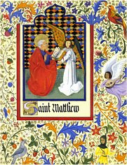

Papež Řehoř Veliký (590-604) je považován za nejvýznamnějšího církevního reformátora. Podporoval umění a zřejmě vytvořil gregoriánský chorál.

V gotické kapli Sainte Chapelle v Paříži byla uložena Kristova trnová koruna.
|
DUCHOVNÍ LITERATURA
Hlavním proudem středověkého umění byla náboženská tvorba. Někdy se pro ni užívá termínu duchovní nebo katolická. Jednotlivá díla vznikala na zakázku církve nebo bohatých donátorů (dárců), kteří se rozhodli církev podpořit. Autorství děl nebylo příliš důležité, a proto řadu umělců neznáme. Důležitý byl náboženský obsah. Rozvíjí se především teologická literatura, legendistika a duchovní lyrika.
Katolická církev
Jedinou institucí, která přežila pád západořímské říše, byla církev. Její role byla nezastupitelná, protože v chaotické době stěhování národů nabízela křesťanské duchovní hodnoty, pevnou hierarchii a fungující strukturu. Všechny barbarské státy postupně přijaly křesťanství a panovníci využili církev pro posílení své moci. Tak rostl její vliv i bohatství.
Když se stalo křesťanství oficiálním náboženstvím, vznikla celá řada nových institucí a nařízení, která se neopírají o Bibli. Křesťanská obec v Římě si začala dělat nárok na výsadní postavení, vznikla funkce papeže, který je sice volen, ale na doživotí, a který se stal oficiální hlavou celé církve a zástupcem Krista na zemi. Představitelé významných křesťanských obcí se scházeli na koncilech, kde přijímali nová náboženská dogmata. Koncil byl nejvyšší autoritou církve a jeho rozhodnutí se musel podřídit i papež. Koncily přijaly učení o sedmi svátostech, Boží trojici, uctívání svatých atd. Spolu s papežem bděly nad jednotou církve, a proto tvrdě potlačovaly jakékoliv snahy o dvojí výklad nebo popírání dogmat. Pokud se o to někdo pokusil, byl obviněn z kacířství a vyobcován z církve. Když heretické hnutí zasáhlo velkou oblast, chránila církev svou jednotu silou (křížové výpravy). Kacíře a čarodějnice čekala smrt upálením. Aby lidé nemohli srovnávat původní učení s pozdějším, bylo zakázáno vlastnit Bibli. Věřící se museli spolehnout na výklad, který jim nabízel kněz při bohoslužbě. Mnohdy mu ale nerozuměli, protože jazykem liturgie byla latina…
|
Historie
V roce 313 vydal římský císař Konstantin Veliký milánský edikt, kterým zrovnoprávnil křesťanství s ostatními náboženstvími v říši. Východořímský císař Justinián zavřel pohanské školy (529) a náboženské svatyně proměnil v hospody nebo muzea pohanství. V roce 1054 došlo k rozdělení církve (schizma) – římský papež se stal hlavou církve katolické (latinské), byzantský císař (později patriarcha) hlavou církve východní (řecké, pravoslavné). Spor o investituru ukončil konkordát wormský (1122), který upravoval vztahy mezi papežem a císařem Svaté říše římské. Další spory se světskou mocí vedly k tomu, že francouzský král zajal papeže a přenesl jeho sídlo do Avignonu (1309). Následné papežské schizma (1378-1417) prohloubilo krizi, která vedla k reformačnímu hnutí (1517) a rozdělení katolické církve.
Tři králové na mozaice z italské Ravenny
|
Aurelius Augustinus (354-430)
Svatý Augustin byl biskupem v Hippu. Je autorem 93 teologických knih, z nichž nejvíce vyniká spis De civitate Dei (O obci Boží). Hříchy mládí i duchovní zrání popsal v autobiografické knize Vyznání (Confessiones).
|
Teologie
Ve středověku nahradila antickou filozofii teologie. Tato věda o bohu vycházela z předem daných církevních dogmat, která se snažila nanejvýš osvětlit. Teologové opírali své výklady o Bibli, ale znali i některé spisy Platona nebo Aristotela.
Učení prvních církevních otců se nazývá patristika. Nejvýznamnějším patristou byl sv. Augustin. V 9. stol. se prosazuje scholastika (školní nauka), kterou tvoří dva hlavní proudy – realismus (Jan Scotus Eriugena) a nominalismus. Tyto směry se snažil smířit Petr Abélard, ale jeho spisy byly odsouzeny jako bludy, a tak proslul hlavně tragickou láskou k Héloise. Nejvýznamnějším představitelem scholastiky byl sv. Tomáš Akvinský, který pilně studoval Aristotelovy spisy a působil jako univerzitní učitel. Dalšími scholastiky byli Roger Bacon a Vilém Ockham. Nejvýznamnějším středověkým mystikem byl Mistr Eckhart.
|
Tomáš Akvinský (1226-1274)
Svatý Tomáš Akvinský pocházel z Itálie. Vstoupil do dominikánského řádu a přednášel na pařížské Sorbonně. Je autorem rozsáhlého spisu
Summa theologica, ve kterém vyložil křesťanský názor na svět a podal 5 důkazů boží existence. Po dlouhých sporech se stal tomismus oficiální ideologií dominikánů.
|
Duchovní epika
Sv. Jiří byl vyřazen z církevního kalendáře, protože se neprokázalo, že šlo o historickou osobnost. Je patronem skautů.
|
Legendy
Původně byly legendy pouze příběhy o životě svatých. Mezi světce patřili především první apoštolové, kteří častokrát zemřeli mučednickou smrtí jako Ježíš Kristus. Také ostatní světci následovali Krista v tom, že za svou víru obětovali život (mučedníci neboli martyrové), nebo se zasloužili o další šíření křesťanství (vyznavači neboli konfesoři). Světci svým životem plně naplnili křesťanský ideál – byli nadmíru zbožní, pomáhali svým bližním, konali zázraky. V 10. stol. dostal proces kanonizace oficiální podobu. V současnosti uznává katolická církev přes 20 000 svatých a 200 000 blahoslavených. Nejvýznamnější světci byli zařazeni do církevního kalendáře. V příslušný den se v kostele předčítá legenda o daném světci a slaví jeho svátek.
Světci konali různé zázraky (uzdravování nevyléčitelných nemocí) nejen za svého života, ale hlavně po smrti. Proto byly jejich ostatky uchovávány v relikviářích a uctívány v kostelech, které nesou jejich jména. Někteří světci začali plnit funkci patronů. Ti ochraňují státy (sv. Václav Čechy), města (sv. Jenovéfa Paříž), povolání (sv. Barbora horníky) nebo některé výdobytky moderní techniky (sv. Klára je patronkou televize, protože viděla na dálku, jak sv. František slouží mši).
|
Atributy svatých
Světců bylo velké množství a nikdo nevěděl, jak vypadali. Aby je věřící od sebe dobře rozeznali, používaly se při jejich zobrazování atributy (předměty, které nějak souvisely s jejich životem popsaným v legendách). Nejčastěji šlo o nástroje jejich umučení (sv. Ondřej skončil na kříži ve tvaru X, sv. Šebestián byl probodán šípy).
Najdi původní význam svého křestního jména. Pomůže ti encyklopedie křestních jmen Po kom se jmenujeme.
Víš, co znamená rčení nomen omen?
|
Legenda aurea

Svatá Lucie
|
Jakub de Voragine: Legenda aurea
Nejrozšířenější sbírkou legend byla Legenda aurea (Zlatá legenda), kterou sestavil dominikánský mnich Jakub de Voragine (†1298) v polovině 13. stol. Nejkratší verze obsahovala 176 příběhů o významných evropských světcích a křesťanských svátcích. Legenda aurea je psána latinsky, začíná adventem a legendou o sv. Ondřejovi a pokračuje dalšími světci a svátky podle církevního kalendáře. Jednotlivé legendy většinou začínají etymologickým výkladem významu světcova jména, který je založen na pouhé zvukové podobnosti slov, a pokračují vylíčením jeho života včetně různých zázraků. Překladatelé Zlaté legendy do ní doplňovali místní světce. Vzniklo tak přes 5000 příběhů o 1054 svatých. Překlad do češtiny (Passionál) pochází z roku 1357 a obsahuje řadu legend o českých světcích.
|

Atributem Svatého Matouše je anděl, který mu pomáhá při psaní evangelia.
Které další světce znáš? Co víš o jejich životě? Jaké mají atributy?
|
Duchovní lyrika
Duchovní lyrika navazuje na biblické žalmy. Jejím hlavním námětem je víra v boha. Církevní hymny opěvují boha i světce, v modlitbách se k nim věřící přímo obracejí se svými prosbami. K nejznámějším písním patří Te Deum laudamus (Bože, chválíme tebe) a Stabat mater (Stála matka). Velmi oblíbený byl gregoriánský chorál (jednohlasý liturgický zpěv skládaný na biblické verše).
Co si myslíš o svatém Františkovi?
Pokus se o něm zjistiv více.
|
František z Assisi
Svatý František pocházel z Itálie, dobrovolně žil v chudobě a ve svém učení kladl největší důraz na lásku a soucit. Založil řád menších bratří (františkánů), kázal ptákům, vytvořil první betlém (jesličky) a proslul krvácejícími ranami (stigmaty) na místech, kde byl poraněn Ježíš Kristus při ukřižování. Je patronem ekologů.
|
František z Assisi (1182-1226)

Svatý František káže ptáčkům.
|

|
Náboženské knihy
Duchovenstvo bylo jedinou vrstvou středověké společnosti, které se dostávalo systematického vzdělání. Centrem vzdělanosti byly kláštery. V jejich skriptoriích mniši knihy ručně opisovali a ilustrovali je barevnými obrázky (iluminace a iniciály).
Velké množství rukopisů (manuskriptů) sloužilo přímo kněžím, kteří je využívali při bohoslužbách. Tyto knihy rozdělujeme podle jejich obsahu. V evangeliáři byla čtyři evangelia, evangelistář zahrnoval výňatky z evangelií, jak se četly během roku, pasionál obsahoval legendy, žaltář žalmy, kancionál (antifonář, graduál) duchovní písně, homiliář (postila) kázání a breviář (hodinky) modlitby. Nejčastěji opisovanou knihou zůstávala Bible.
|
V iniciále (velmi zdobené počáteční písmeno textu) je zachycen mnich, který si ořezává husí brk na psaní.
|
Internetové stránky
Romanes, románské umění
Catholic forum, světci
Saints in Art, reprodukce
|
Doporučená četba
Abelárd a Heloisa, Dopisy lásky a utrpení, přel. J.Pavel, Praha 1976
Augustinus, Aurelius: Vyznání, přel. M.Levý, Kalich, Praha 1990
Hallamová, Elizabeth: Světci, Kdo jsou a jak vám pomáhají, přel. J.Vacek, Volvox globator, Praha 1996
Kazantzakis, Nikos: Chuďásek boží (román o sv. Františkovi z Assisi)
Rameš, Václav: Po kom se jmenujeme, Encyklopedie křestních jmen, Libri, 2000
Váchal, Josef: Církev a blouznivci, Volvox globator, Praha 1992
Voragine, Jakub de: Legenda aurea, Vyšehrad, Praha 1998
|
Připrav si referát o některé z uvedených knih nebo internetových stránek.

Bdění u mrtvéo
|
|